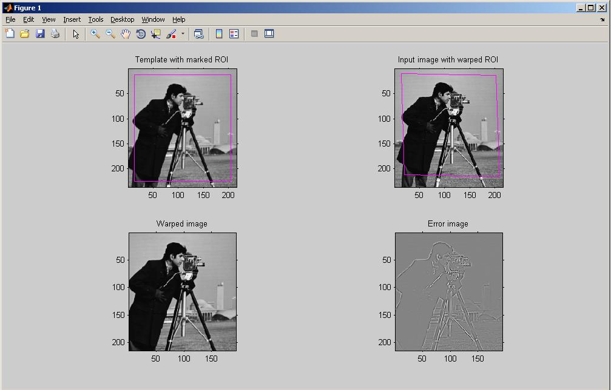
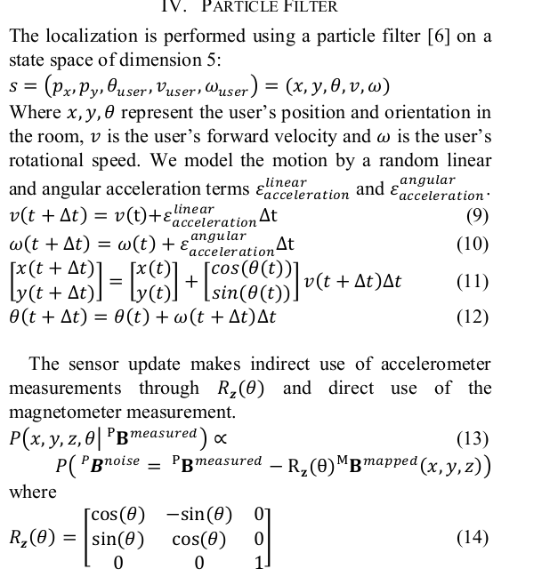

<!DOCTYPE html>
<html lang="en">
<head>
<meta charset="UTF-8">
<meta http-equiv="X-UA-Compatible" content="IE=edge">
<meta name="viewport" content="width=device-width, initial-scale=1.0">
<meta name="generator" content="Asciidoctor 2.0.10">
<title>impossible problem</title>
<link rel="stylesheet" href="https://fonts.googleapis.com/css?family=Open+Sans:300,300italic,400,400italic,600,600italic%7CNoto+Serif:400,400italic,700,700italic%7CDroid+Sans+Mono:400,700">
<style>
/* Asciidoctor default stylesheet | MIT License | https://asciidoctor.org */
/* Uncomment @import statement to use as custom stylesheet */
/*@import "https://fonts.googleapis.com/css?family=Open+Sans:300,300italic,400,400italic,600,600italic%7CNoto+Serif:400,400italic,700,700italic%7CDroid+Sans+Mono:400,700";*/
article,aside,details,figcaption,figure,footer,header,hgroup,main,nav,section{display:block}
audio,video{display:inline-block}
audio:not([controls]){display:none;height:0}
html{font-family:sans-serif;-ms-text-size-adjust:100%;-webkit-text-size-adjust:100%}
a{background:none}
a:focus{outline:thin dotted}
a:active,a:hover{outline:0}
h1{font-size:2em;margin:.67em 0}
abbr[title]{border-bottom:1px dotted}
b,strong{font-weight:bold}
dfn{font-style:italic}
hr{-moz-box-sizing:content-box;box-sizing:content-box;height:0}
mark{background:#ff0;color:#000}
code,kbd,pre,samp{font-family:monospace;font-size:1em}
pre{white-space:pre-wrap}
q{quotes:"\201C" "\201D" "\2018" "\2019"}
small{font-size:80%}
sub,sup{font-size:75%;line-height:0;position:relative;vertical-align:baseline}
sup{top:-.5em}
sub{bottom:-.25em}
img{border:0}
svg:not(:root){overflow:hidden}
figure{margin:0}
fieldset{border:1px solid silver;margin:0 2px;padding:.35em .625em .75em}
legend{border:0;padding:0}
button,input,select,textarea{font-family:inherit;font-size:100%;margin:0}
button,input{line-height:normal}
button,select{text-transform:none}
button,html input[type="button"],input[type="reset"],input[type="submit"]{-webkit-appearance:button;cursor:pointer}
button[disabled],html input[disabled]{cursor:default}
input[type="checkbox"],input[type="radio"]{box-sizing:border-box;padding:0}
button::-moz-focus-inner,input::-moz-focus-inner{border:0;padding:0}
textarea{overflow:auto;vertical-align:top}
table{border-collapse:collapse;border-spacing:0}
*,*::before,*::after{-moz-box-sizing:border-box;-webkit-box-sizing:border-box;box-sizing:border-box}
html,body{font-size:100%}
body{background:#fff;color:rgba(0,0,0,.8);padding:0;margin:0;font-family:"Noto Serif","DejaVu Serif",serif;font-weight:400;font-style:normal;line-height:1;position:relative;cursor:auto;tab-size:4;-moz-osx-font-smoothing:grayscale;-webkit-font-smoothing:antialiased}
a:hover{cursor:pointer}
img,object,embed{max-width:100%;height:auto}
object,embed{height:100%}
img{-ms-interpolation-mode:bicubic}
.left{float:left!important}
.right{float:right!important}
.text-left{text-align:left!important}
.text-right{text-align:right!important}
.text-center{text-align:center!important}
.text-justify{text-align:justify!important}
.hide{display:none}
img,object,svg{display:inline-block;vertical-align:middle}
textarea{height:auto;min-height:50px}
select{width:100%}
.center{margin-left:auto;margin-right:auto}
.stretch{width:100%}
.subheader,.admonitionblock td.content>.title,.audioblock>.title,.exampleblock>.title,.imageblock>.title,.listingblock>.title,.literalblock>.title,.stemblock>.title,.openblock>.title,.paragraph>.title,.quoteblock>.title,table.tableblock>.title,.verseblock>.title,.videoblock>.title,.dlist>.title,.olist>.title,.ulist>.title,.qlist>.title,.hdlist>.title{line-height:1.45;color:#7a2518;font-weight:400;margin-top:0;margin-bottom:.25em}
div,dl,dt,dd,ul,ol,li,h1,h2,h3,#toctitle,.sidebarblock>.content>.title,h4,h5,h6,pre,form,p,blockquote,th,td{margin:0;padding:0;direction:ltr}
a{color:#2156a5;text-decoration:underline;line-height:inherit}
a:hover,a:focus{color:#1d4b8f}
a img{border:0}
p{font-family:inherit;font-weight:400;font-size:1em;line-height:1.6;margin-bottom:1.25em;text-rendering:optimizeLegibility}
p aside{font-size:.875em;line-height:1.35;font-style:italic}
h1,h2,h3,#toctitle,.sidebarblock>.content>.title,h4,h5,h6{font-family:"Open Sans","DejaVu Sans",sans-serif;font-weight:300;font-style:normal;color:#ba3925;text-rendering:optimizeLegibility;margin-top:1em;margin-bottom:.5em;line-height:1.0125em}
h1 small,h2 small,h3 small,#toctitle small,.sidebarblock>.content>.title small,h4 small,h5 small,h6 small{font-size:60%;color:#e99b8f;line-height:0}
h1{font-size:2.125em}
h2{font-size:1.6875em}
h3,#toctitle,.sidebarblock>.content>.title{font-size:1.375em}
h4,h5{font-size:1.125em}
h6{font-size:1em}
hr{border:solid #dddddf;border-width:1px 0 0;clear:both;margin:1.25em 0 1.1875em;height:0}
em,i{font-style:italic;line-height:inherit}
strong,b{font-weight:bold;line-height:inherit}
small{font-size:60%;line-height:inherit}
code{font-family:"Droid Sans Mono","DejaVu Sans Mono",monospace;font-weight:400;color:rgba(0,0,0,.9)}
ul,ol,dl{font-size:1em;line-height:1.6;margin-bottom:1.25em;list-style-position:outside;font-family:inherit}
ul,ol{margin-left:1.5em}
ul li ul,ul li ol{margin-left:1.25em;margin-bottom:0;font-size:1em}
ul.square li ul,ul.circle li ul,ul.disc li ul{list-style:inherit}
ul.square{list-style-type:square}
ul.circle{list-style-type:circle}
ul.disc{list-style-type:disc}
ol li ul,ol li ol{margin-left:1.25em;margin-bottom:0}
dl dt{margin-bottom:.3125em;font-weight:bold}
dl dd{margin-bottom:1.25em}
abbr,acronym{text-transform:uppercase;font-size:90%;color:rgba(0,0,0,.8);border-bottom:1px dotted #ddd;cursor:help}
abbr{text-transform:none}
blockquote{margin:0 0 1.25em;padding:.5625em 1.25em 0 1.1875em;border-left:1px solid #ddd}
blockquote cite{display:block;font-size:.9375em;color:rgba(0,0,0,.6)}
blockquote cite::before{content:"\2014 \0020"}
blockquote cite a,blockquote cite a:visited{color:rgba(0,0,0,.6)}
blockquote,blockquote p{line-height:1.6;color:rgba(0,0,0,.85)}
@media screen and (min-width:768px){h1,h2,h3,#toctitle,.sidebarblock>.content>.title,h4,h5,h6{line-height:1.2}
h1{font-size:2.75em}
h2{font-size:2.3125em}
h3,#toctitle,.sidebarblock>.content>.title{font-size:1.6875em}
h4{font-size:1.4375em}}
table{background:#fff;margin-bottom:1.25em;border:solid 1px #dedede}
table thead,table tfoot{background:#f7f8f7}
table thead tr th,table thead tr td,table tfoot tr th,table tfoot tr td{padding:.5em .625em .625em;font-size:inherit;color:rgba(0,0,0,.8);text-align:left}
table tr th,table tr td{padding:.5625em .625em;font-size:inherit;color:rgba(0,0,0,.8)}
table tr.even,table tr.alt{background:#f8f8f7}
table thead tr th,table tfoot tr th,table tbody tr td,table tr td,table tfoot tr td{display:table-cell;line-height:1.6}
h1,h2,h3,#toctitle,.sidebarblock>.content>.title,h4,h5,h6{line-height:1.2;word-spacing:-.05em}
h1 strong,h2 strong,h3 strong,#toctitle strong,.sidebarblock>.content>.title strong,h4 strong,h5 strong,h6 strong{font-weight:400}
.clearfix::before,.clearfix::after,.float-group::before,.float-group::after{content:" ";display:table}
.clearfix::after,.float-group::after{clear:both}
:not(pre):not([class^=L])>code{font-size:.9375em;font-style:normal!important;letter-spacing:0;padding:.1em .5ex;word-spacing:-.15em;background:#f7f7f8;-webkit-border-radius:4px;border-radius:4px;line-height:1.45;text-rendering:optimizeSpeed;word-wrap:break-word}
:not(pre)>code.nobreak{word-wrap:normal}
:not(pre)>code.nowrap{white-space:nowrap}
pre{color:rgba(0,0,0,.9);font-family:"Droid Sans Mono","DejaVu Sans Mono",monospace;line-height:1.45;text-rendering:optimizeSpeed}
pre code,pre pre{color:inherit;font-size:inherit;line-height:inherit}
pre>code{display:block}
pre.nowrap,pre.nowrap pre{white-space:pre;word-wrap:normal}
em em{font-style:normal}
strong strong{font-weight:400}
.keyseq{color:rgba(51,51,51,.8)}
kbd{font-family:"Droid Sans Mono","DejaVu Sans Mono",monospace;display:inline-block;color:rgba(0,0,0,.8);font-size:.65em;line-height:1.45;background:#f7f7f7;border:1px solid #ccc;-webkit-border-radius:3px;border-radius:3px;-webkit-box-shadow:0 1px 0 rgba(0,0,0,.2),0 0 0 .1em white inset;box-shadow:0 1px 0 rgba(0,0,0,.2),0 0 0 .1em #fff inset;margin:0 .15em;padding:.2em .5em;vertical-align:middle;position:relative;top:-.1em;white-space:nowrap}
.keyseq kbd:first-child{margin-left:0}
.keyseq kbd:last-child{margin-right:0}
.menuseq,.menuref{color:#000}
.menuseq b:not(.caret),.menuref{font-weight:inherit}
.menuseq{word-spacing:-.02em}
.menuseq b.caret{font-size:1.25em;line-height:.8}
.menuseq i.caret{font-weight:bold;text-align:center;width:.45em}
b.button::before,b.button::after{position:relative;top:-1px;font-weight:400}
b.button::before{content:"[";padding:0 3px 0 2px}
b.button::after{content:"]";padding:0 2px 0 3px}
p a>code:hover{color:rgba(0,0,0,.9)}
#header,#content,#footnotes,#footer{width:100%;margin-left:auto;margin-right:auto;margin-top:0;margin-bottom:0;max-width:62.5em;*zoom:1;position:relative;padding-left:.9375em;padding-right:.9375em}
#header::before,#header::after,#content::before,#content::after,#footnotes::before,#footnotes::after,#footer::before,#footer::after{content:" ";display:table}
#header::after,#content::after,#footnotes::after,#footer::after{clear:both}
#content{margin-top:1.25em}
#content::before{content:none}
#header>h1:first-child{color:rgba(0,0,0,.85);margin-top:2.25rem;margin-bottom:0}
#header>h1:first-child+#toc{margin-top:8px;border-top:1px solid #dddddf}
#header>h1:only-child,body.toc2 #header>h1:nth-last-child(2){border-bottom:1px solid #dddddf;padding-bottom:8px}
#header .details{border-bottom:1px solid #dddddf;line-height:1.45;padding-top:.25em;padding-bottom:.25em;padding-left:.25em;color:rgba(0,0,0,.6);display:-ms-flexbox;display:-webkit-flex;display:flex;-ms-flex-flow:row wrap;-webkit-flex-flow:row wrap;flex-flow:row wrap}
#header .details span:first-child{margin-left:-.125em}
#header .details span.email a{color:rgba(0,0,0,.85)}
#header .details br{display:none}
#header .details br+span::before{content:"\00a0\2013\00a0"}
#header .details br+span.author::before{content:"\00a0\22c5\00a0";color:rgba(0,0,0,.85)}
#header .details br+span#revremark::before{content:"\00a0|\00a0"}
#header #revnumber{text-transform:capitalize}
#header #revnumber::after{content:"\00a0"}
#content>h1:first-child:not([class]){color:rgba(0,0,0,.85);border-bottom:1px solid #dddddf;padding-bottom:8px;margin-top:0;padding-top:1rem;margin-bottom:1.25rem}
#toc{border-bottom:1px solid #e7e7e9;padding-bottom:.5em}
#toc>ul{margin-left:.125em}
#toc ul.sectlevel0>li>a{font-style:italic}
#toc ul.sectlevel0 ul.sectlevel1{margin:.5em 0}
#toc ul{font-family:"Open Sans","DejaVu Sans",sans-serif;list-style-type:none}
#toc li{line-height:1.3334;margin-top:.3334em}
#toc a{text-decoration:none}
#toc a:active{text-decoration:underline}
#toctitle{color:#7a2518;font-size:1.2em}
@media screen and (min-width:768px){#toctitle{font-size:1.375em}
body.toc2{padding-left:15em;padding-right:0}
#toc.toc2{margin-top:0!important;background:#f8f8f7;position:fixed;width:15em;left:0;top:0;border-right:1px solid #e7e7e9;border-top-width:0!important;border-bottom-width:0!important;z-index:1000;padding:1.25em 1em;height:100%;overflow:auto}
#toc.toc2 #toctitle{margin-top:0;margin-bottom:.8rem;font-size:1.2em}
#toc.toc2>ul{font-size:.9em;margin-bottom:0}
#toc.toc2 ul ul{margin-left:0;padding-left:1em}
#toc.toc2 ul.sectlevel0 ul.sectlevel1{padding-left:0;margin-top:.5em;margin-bottom:.5em}
body.toc2.toc-right{padding-left:0;padding-right:15em}
body.toc2.toc-right #toc.toc2{border-right-width:0;border-left:1px solid #e7e7e9;left:auto;right:0}}
@media screen and (min-width:1280px){body.toc2{padding-left:20em;padding-right:0}
#toc.toc2{width:20em}
#toc.toc2 #toctitle{font-size:1.375em}
#toc.toc2>ul{font-size:.95em}
#toc.toc2 ul ul{padding-left:1.25em}
body.toc2.toc-right{padding-left:0;padding-right:20em}}
#content #toc{border-style:solid;border-width:1px;border-color:#e0e0dc;margin-bottom:1.25em;padding:1.25em;background:#f8f8f7;-webkit-border-radius:4px;border-radius:4px}
#content #toc>:first-child{margin-top:0}
#content #toc>:last-child{margin-bottom:0}
#footer{max-width:100%;background:rgba(0,0,0,.8);padding:1.25em}
#footer-text{color:rgba(255,255,255,.8);line-height:1.44}
#content{margin-bottom:.625em}
.sect1{padding-bottom:.625em}
@media screen and (min-width:768px){#content{margin-bottom:1.25em}
.sect1{padding-bottom:1.25em}}
.sect1:last-child{padding-bottom:0}
.sect1+.sect1{border-top:1px solid #e7e7e9}
#content h1>a.anchor,h2>a.anchor,h3>a.anchor,#toctitle>a.anchor,.sidebarblock>.content>.title>a.anchor,h4>a.anchor,h5>a.anchor,h6>a.anchor{position:absolute;z-index:1001;width:1.5ex;margin-left:-1.5ex;display:block;text-decoration:none!important;visibility:hidden;text-align:center;font-weight:400}
#content h1>a.anchor::before,h2>a.anchor::before,h3>a.anchor::before,#toctitle>a.anchor::before,.sidebarblock>.content>.title>a.anchor::before,h4>a.anchor::before,h5>a.anchor::before,h6>a.anchor::before{content:"\00A7";font-size:.85em;display:block;padding-top:.1em}
#content h1:hover>a.anchor,#content h1>a.anchor:hover,h2:hover>a.anchor,h2>a.anchor:hover,h3:hover>a.anchor,#toctitle:hover>a.anchor,.sidebarblock>.content>.title:hover>a.anchor,h3>a.anchor:hover,#toctitle>a.anchor:hover,.sidebarblock>.content>.title>a.anchor:hover,h4:hover>a.anchor,h4>a.anchor:hover,h5:hover>a.anchor,h5>a.anchor:hover,h6:hover>a.anchor,h6>a.anchor:hover{visibility:visible}
#content h1>a.link,h2>a.link,h3>a.link,#toctitle>a.link,.sidebarblock>.content>.title>a.link,h4>a.link,h5>a.link,h6>a.link{color:#ba3925;text-decoration:none}
#content h1>a.link:hover,h2>a.link:hover,h3>a.link:hover,#toctitle>a.link:hover,.sidebarblock>.content>.title>a.link:hover,h4>a.link:hover,h5>a.link:hover,h6>a.link:hover{color:#a53221}
details,.audioblock,.imageblock,.literalblock,.listingblock,.stemblock,.videoblock{margin-bottom:1.25em}
details>summary:first-of-type{cursor:pointer;display:list-item;outline:none;margin-bottom:.75em}
.admonitionblock td.content>.title,.audioblock>.title,.exampleblock>.title,.imageblock>.title,.listingblock>.title,.literalblock>.title,.stemblock>.title,.openblock>.title,.paragraph>.title,.quoteblock>.title,table.tableblock>.title,.verseblock>.title,.videoblock>.title,.dlist>.title,.olist>.title,.ulist>.title,.qlist>.title,.hdlist>.title{text-rendering:optimizeLegibility;text-align:left;font-family:"Noto Serif","DejaVu Serif",serif;font-size:1rem;font-style:italic}
table.tableblock.fit-content>caption.title{white-space:nowrap;width:0}
.paragraph.lead>p,#preamble>.sectionbody>[class="paragraph"]:first-of-type p{font-size:1.21875em;line-height:1.6;color:rgba(0,0,0,.85)}
table.tableblock #preamble>.sectionbody>[class="paragraph"]:first-of-type p{font-size:inherit}
.admonitionblock>table{border-collapse:separate;border:0;background:none;width:100%}
.admonitionblock>table td.icon{text-align:center;width:80px}
.admonitionblock>table td.icon img{max-width:none}
.admonitionblock>table td.icon .title{font-weight:bold;font-family:"Open Sans","DejaVu Sans",sans-serif;text-transform:uppercase}
.admonitionblock>table td.content{padding-left:1.125em;padding-right:1.25em;border-left:1px solid #dddddf;color:rgba(0,0,0,.6)}
.admonitionblock>table td.content>:last-child>:last-child{margin-bottom:0}
.exampleblock>.content{border-style:solid;border-width:1px;border-color:#e6e6e6;margin-bottom:1.25em;padding:1.25em;background:#fff;-webkit-border-radius:4px;border-radius:4px}
.exampleblock>.content>:first-child{margin-top:0}
.exampleblock>.content>:last-child{margin-bottom:0}
.sidebarblock{border-style:solid;border-width:1px;border-color:#dbdbd6;margin-bottom:1.25em;padding:1.25em;background:#f3f3f2;-webkit-border-radius:4px;border-radius:4px}
.sidebarblock>:first-child{margin-top:0}
.sidebarblock>:last-child{margin-bottom:0}
.sidebarblock>.content>.title{color:#7a2518;margin-top:0;text-align:center}
.exampleblock>.content>:last-child>:last-child,.exampleblock>.content .olist>ol>li:last-child>:last-child,.exampleblock>.content .ulist>ul>li:last-child>:last-child,.exampleblock>.content .qlist>ol>li:last-child>:last-child,.sidebarblock>.content>:last-child>:last-child,.sidebarblock>.content .olist>ol>li:last-child>:last-child,.sidebarblock>.content .ulist>ul>li:last-child>:last-child,.sidebarblock>.content .qlist>ol>li:last-child>:last-child{margin-bottom:0}
.literalblock pre,.listingblock>.content>pre{-webkit-border-radius:4px;border-radius:4px;word-wrap:break-word;overflow-x:auto;padding:1em;font-size:.8125em}
@media screen and (min-width:768px){.literalblock pre,.listingblock>.content>pre{font-size:.90625em}}
@media screen and (min-width:1280px){.literalblock pre,.listingblock>.content>pre{font-size:1em}}
.literalblock pre,.listingblock>.content>pre:not(.highlight),.listingblock>.content>pre[class="highlight"],.listingblock>.content>pre[class^="highlight "]{background:#f7f7f8}
.literalblock.output pre{color:#f7f7f8;background:rgba(0,0,0,.9)}
.listingblock>.content{position:relative}
.listingblock code[data-lang]::before{display:none;content:attr(data-lang);position:absolute;font-size:.75em;top:.425rem;right:.5rem;line-height:1;text-transform:uppercase;color:inherit;opacity:.5}
.listingblock:hover code[data-lang]::before{display:block}
.listingblock.terminal pre .command::before{content:attr(data-prompt);padding-right:.5em;color:inherit;opacity:.5}
.listingblock.terminal pre .command:not([data-prompt])::before{content:"$"}
.listingblock pre.highlightjs{padding:0}
.listingblock pre.highlightjs>code{padding:1em;-webkit-border-radius:4px;border-radius:4px}
.listingblock pre.prettyprint{border-width:0}
.prettyprint{background:#f7f7f8}
pre.prettyprint .linenums{line-height:1.45;margin-left:2em}
pre.prettyprint li{background:none;list-style-type:inherit;padding-left:0}
pre.prettyprint li code[data-lang]::before{opacity:1}
pre.prettyprint li:not(:first-child) code[data-lang]::before{display:none}
table.linenotable{border-collapse:separate;border:0;margin-bottom:0;background:none}
table.linenotable td[class]{color:inherit;vertical-align:top;padding:0;line-height:inherit;white-space:normal}
table.linenotable td.code{padding-left:.75em}
table.linenotable td.linenos{border-right:1px solid currentColor;opacity:.35;padding-right:.5em}
pre.pygments .lineno{border-right:1px solid currentColor;opacity:.35;display:inline-block;margin-right:.75em}
pre.pygments .lineno::before{content:"";margin-right:-.125em}
.quoteblock{margin:0 1em 1.25em 1.5em;display:table}
.quoteblock:not(.excerpt)>.title{margin-left:-1.5em;margin-bottom:.75em}
.quoteblock blockquote,.quoteblock p{color:rgba(0,0,0,.85);font-size:1.15rem;line-height:1.75;word-spacing:.1em;letter-spacing:0;font-style:italic;text-align:justify}
.quoteblock blockquote{margin:0;padding:0;border:0}
.quoteblock blockquote::before{content:"\201c";float:left;font-size:2.75em;font-weight:bold;line-height:.6em;margin-left:-.6em;color:#7a2518;text-shadow:0 1px 2px rgba(0,0,0,.1)}
.quoteblock blockquote>.paragraph:last-child p{margin-bottom:0}
.quoteblock .attribution{margin-top:.75em;margin-right:.5ex;text-align:right}
.verseblock{margin:0 1em 1.25em}
.verseblock pre{font-family:"Open Sans","DejaVu Sans",sans;font-size:1.15rem;color:rgba(0,0,0,.85);font-weight:300;text-rendering:optimizeLegibility}
.verseblock pre strong{font-weight:400}
.verseblock .attribution{margin-top:1.25rem;margin-left:.5ex}
.quoteblock .attribution,.verseblock .attribution{font-size:.9375em;line-height:1.45;font-style:italic}
.quoteblock .attribution br,.verseblock .attribution br{display:none}
.quoteblock .attribution cite,.verseblock .attribution cite{display:block;letter-spacing:-.025em;color:rgba(0,0,0,.6)}
.quoteblock.abstract blockquote::before,.quoteblock.excerpt blockquote::before,.quoteblock .quoteblock blockquote::before{display:none}
.quoteblock.abstract blockquote,.quoteblock.abstract p,.quoteblock.excerpt blockquote,.quoteblock.excerpt p,.quoteblock .quoteblock blockquote,.quoteblock .quoteblock p{line-height:1.6;word-spacing:0}
.quoteblock.abstract{margin:0 1em 1.25em;display:block}
.quoteblock.abstract>.title{margin:0 0 .375em;font-size:1.15em;text-align:center}
.quoteblock.excerpt>blockquote,.quoteblock .quoteblock{padding:0 0 .25em 1em;border-left:.25em solid #dddddf}
.quoteblock.excerpt,.quoteblock .quoteblock{margin-left:0}
.quoteblock.excerpt blockquote,.quoteblock.excerpt p,.quoteblock .quoteblock blockquote,.quoteblock .quoteblock p{color:inherit;font-size:1.0625rem}
.quoteblock.excerpt .attribution,.quoteblock .quoteblock .attribution{color:inherit;text-align:left;margin-right:0}
table.tableblock{max-width:100%;border-collapse:separate}
p.tableblock:last-child{margin-bottom:0}
td.tableblock>.content>:last-child{margin-bottom:-1.25em}
td.tableblock>.content>:last-child.sidebarblock{margin-bottom:0}
table.tableblock,th.tableblock,td.tableblock{border:0 solid #dedede}
table.grid-all>thead>tr>.tableblock,table.grid-all>tbody>tr>.tableblock{border-width:0 1px 1px 0}
table.grid-all>tfoot>tr>.tableblock{border-width:1px 1px 0 0}
table.grid-cols>*>tr>.tableblock{border-width:0 1px 0 0}
table.grid-rows>thead>tr>.tableblock,table.grid-rows>tbody>tr>.tableblock{border-width:0 0 1px}
table.grid-rows>tfoot>tr>.tableblock{border-width:1px 0 0}
table.grid-all>*>tr>.tableblock:last-child,table.grid-cols>*>tr>.tableblock:last-child{border-right-width:0}
table.grid-all>tbody>tr:last-child>.tableblock,table.grid-all>thead:last-child>tr>.tableblock,table.grid-rows>tbody>tr:last-child>.tableblock,table.grid-rows>thead:last-child>tr>.tableblock{border-bottom-width:0}
table.frame-all{border-width:1px}
table.frame-sides{border-width:0 1px}
table.frame-topbot,table.frame-ends{border-width:1px 0}
table.stripes-all tr,table.stripes-odd tr:nth-of-type(odd),table.stripes-even tr:nth-of-type(even),table.stripes-hover tr:hover{background:#f8f8f7}
th.halign-left,td.halign-left{text-align:left}
th.halign-right,td.halign-right{text-align:right}
th.halign-center,td.halign-center{text-align:center}
th.valign-top,td.valign-top{vertical-align:top}
th.valign-bottom,td.valign-bottom{vertical-align:bottom}
th.valign-middle,td.valign-middle{vertical-align:middle}
table thead th,table tfoot th{font-weight:bold}
tbody tr th{display:table-cell;line-height:1.6;background:#f7f8f7}
tbody tr th,tbody tr th p,tfoot tr th,tfoot tr th p{color:rgba(0,0,0,.8);font-weight:bold}
p.tableblock>code:only-child{background:none;padding:0}
p.tableblock{font-size:1em}
ol{margin-left:1.75em}
ul li ol{margin-left:1.5em}
dl dd{margin-left:1.125em}
dl dd:last-child,dl dd:last-child>:last-child{margin-bottom:0}
ol>li p,ul>li p,ul dd,ol dd,.olist .olist,.ulist .ulist,.ulist .olist,.olist .ulist{margin-bottom:.625em}
ul.checklist,ul.none,ol.none,ul.no-bullet,ol.no-bullet,ol.unnumbered,ul.unstyled,ol.unstyled{list-style-type:none}
ul.no-bullet,ol.no-bullet,ol.unnumbered{margin-left:.625em}
ul.unstyled,ol.unstyled{margin-left:0}
ul.checklist{margin-left:.625em}
ul.checklist li>p:first-child>.fa-square-o:first-child,ul.checklist li>p:first-child>.fa-check-square-o:first-child{width:1.25em;font-size:.8em;position:relative;bottom:.125em}
ul.checklist li>p:first-child>input[type="checkbox"]:first-child{margin-right:.25em}
ul.inline{display:-ms-flexbox;display:-webkit-box;display:flex;-ms-flex-flow:row wrap;-webkit-flex-flow:row wrap;flex-flow:row wrap;list-style:none;margin:0 0 .625em -1.25em}
ul.inline>li{margin-left:1.25em}
.unstyled dl dt{font-weight:400;font-style:normal}
ol.arabic{list-style-type:decimal}
ol.decimal{list-style-type:decimal-leading-zero}
ol.loweralpha{list-style-type:lower-alpha}
ol.upperalpha{list-style-type:upper-alpha}
ol.lowerroman{list-style-type:lower-roman}
ol.upperroman{list-style-type:upper-roman}
ol.lowergreek{list-style-type:lower-greek}
.hdlist>table,.colist>table{border:0;background:none}
.hdlist>table>tbody>tr,.colist>table>tbody>tr{background:none}
td.hdlist1,td.hdlist2{vertical-align:top;padding:0 .625em}
td.hdlist1{font-weight:bold;padding-bottom:1.25em}
.literalblock+.colist,.listingblock+.colist{margin-top:-.5em}
.colist td:not([class]):first-child{padding:.4em .75em 0;line-height:1;vertical-align:top}
.colist td:not([class]):first-child img{max-width:none}
.colist td:not([class]):last-child{padding:.25em 0}
.thumb,.th{line-height:0;display:inline-block;border:solid 4px #fff;-webkit-box-shadow:0 0 0 1px #ddd;box-shadow:0 0 0 1px #ddd}
.imageblock.left{margin:.25em .625em 1.25em 0}
.imageblock.right{margin:.25em 0 1.25em .625em}
.imageblock>.title{margin-bottom:0}
.imageblock.thumb,.imageblock.th{border-width:6px}
.imageblock.thumb>.title,.imageblock.th>.title{padding:0 .125em}
.image.left,.image.right{margin-top:.25em;margin-bottom:.25em;display:inline-block;line-height:0}
.image.left{margin-right:.625em}
.image.right{margin-left:.625em}
a.image{text-decoration:none;display:inline-block}
a.image object{pointer-events:none}
sup.footnote,sup.footnoteref{font-size:.875em;position:static;vertical-align:super}
sup.footnote a,sup.footnoteref a{text-decoration:none}
sup.footnote a:active,sup.footnoteref a:active{text-decoration:underline}
#footnotes{padding-top:.75em;padding-bottom:.75em;margin-bottom:.625em}
#footnotes hr{width:20%;min-width:6.25em;margin:-.25em 0 .75em;border-width:1px 0 0}
#footnotes .footnote{padding:0 .375em 0 .225em;line-height:1.3334;font-size:.875em;margin-left:1.2em;margin-bottom:.2em}
#footnotes .footnote a:first-of-type{font-weight:bold;text-decoration:none;margin-left:-1.05em}
#footnotes .footnote:last-of-type{margin-bottom:0}
#content #footnotes{margin-top:-.625em;margin-bottom:0;padding:.75em 0}
.gist .file-data>table{border:0;background:#fff;width:100%;margin-bottom:0}
.gist .file-data>table td.line-data{width:99%}
div.unbreakable{page-break-inside:avoid}
.big{font-size:larger}
.small{font-size:smaller}
.underline{text-decoration:underline}
.overline{text-decoration:overline}
.line-through{text-decoration:line-through}
.aqua{color:#00bfbf}
.aqua-background{background:#00fafa}
.black{color:#000}
.black-background{background:#000}
.blue{color:#0000bf}
.blue-background{background:#0000fa}
.fuchsia{color:#bf00bf}
.fuchsia-background{background:#fa00fa}
.gray{color:#606060}
.gray-background{background:#7d7d7d}
.green{color:#006000}
.green-background{background:#007d00}
.lime{color:#00bf00}
.lime-background{background:#00fa00}
.maroon{color:#600000}
.maroon-background{background:#7d0000}
.navy{color:#000060}
.navy-background{background:#00007d}
.olive{color:#606000}
.olive-background{background:#7d7d00}
.purple{color:#600060}
.purple-background{background:#7d007d}
.red{color:#bf0000}
.red-background{background:#fa0000}
.silver{color:#909090}
.silver-background{background:#bcbcbc}
.teal{color:#006060}
.teal-background{background:#007d7d}
.white{color:#bfbfbf}
.white-background{background:#fafafa}
.yellow{color:#bfbf00}
.yellow-background{background:#fafa00}
span.icon>.fa{cursor:default}
a span.icon>.fa{cursor:inherit}
.admonitionblock td.icon [class^="fa icon-"]{font-size:2.5em;text-shadow:1px 1px 2px rgba(0,0,0,.5);cursor:default}
.admonitionblock td.icon .icon-note::before{content:"\f05a";color:#19407c}
.admonitionblock td.icon .icon-tip::before{content:"\f0eb";text-shadow:1px 1px 2px rgba(155,155,0,.8);color:#111}
.admonitionblock td.icon .icon-warning::before{content:"\f071";color:#bf6900}
.admonitionblock td.icon .icon-caution::before{content:"\f06d";color:#bf3400}
.admonitionblock td.icon .icon-important::before{content:"\f06a";color:#bf0000}
.conum[data-value]{display:inline-block;color:#fff!important;background:rgba(0,0,0,.8);-webkit-border-radius:100px;border-radius:100px;text-align:center;font-size:.75em;width:1.67em;height:1.67em;line-height:1.67em;font-family:"Open Sans","DejaVu Sans",sans-serif;font-style:normal;font-weight:bold}
.conum[data-value] *{color:#fff!important}
.conum[data-value]+b{display:none}
.conum[data-value]::after{content:attr(data-value)}
pre .conum[data-value]{position:relative;top:-.125em}
b.conum *{color:inherit!important}
.conum:not([data-value]):empty{display:none}
dt,th.tableblock,td.content,div.footnote{text-rendering:optimizeLegibility}
h1,h2,p,td.content,span.alt{letter-spacing:-.01em}
p strong,td.content strong,div.footnote strong{letter-spacing:-.005em}
p,blockquote,dt,td.content,span.alt{font-size:1.0625rem}
p{margin-bottom:1.25rem}
.sidebarblock p,.sidebarblock dt,.sidebarblock td.content,p.tableblock{font-size:1em}
.exampleblock>.content{background:#fffef7;border-color:#e0e0dc;-webkit-box-shadow:0 1px 4px #e0e0dc;box-shadow:0 1px 4px #e0e0dc}
.print-only{display:none!important}
@page{margin:1.25cm .75cm}
@media print{*{-webkit-box-shadow:none!important;box-shadow:none!important;text-shadow:none!important}
html{font-size:80%}
a{color:inherit!important;text-decoration:underline!important}
a.bare,a[href^="#"],a[href^="mailto:"]{text-decoration:none!important}
a[href^="http:"]:not(.bare)::after,a[href^="https:"]:not(.bare)::after{content:"(" attr(href) ")";display:inline-block;font-size:.875em;padding-left:.25em}
abbr[title]::after{content:" (" attr(title) ")"}
pre,blockquote,tr,img,object,svg{page-break-inside:avoid}
thead{display:table-header-group}
svg{max-width:100%}
p,blockquote,dt,td.content{font-size:1em;orphans:3;widows:3}
h2,h3,#toctitle,.sidebarblock>.content>.title{page-break-after:avoid}
#toc,.sidebarblock,.exampleblock>.content{background:none!important}
#toc{border-bottom:1px solid #dddddf!important;padding-bottom:0!important}
body.book #header{text-align:center}
body.book #header>h1:first-child{border:0!important;margin:2.5em 0 1em}
body.book #header .details{border:0!important;display:block;padding:0!important}
body.book #header .details span:first-child{margin-left:0!important}
body.book #header .details br{display:block}
body.book #header .details br+span::before{content:none!important}
body.book #toc{border:0!important;text-align:left!important;padding:0!important;margin:0!important}
body.book #toc,body.book #preamble,body.book h1.sect0,body.book .sect1>h2{page-break-before:always}
.listingblock code[data-lang]::before{display:block}
#footer{padding:0 .9375em}
.hide-on-print{display:none!important}
.print-only{display:block!important}
.hide-for-print{display:none!important}
.show-for-print{display:inherit!important}}
@media print,amzn-kf8{#header>h1:first-child{margin-top:1.25rem}
.sect1{padding:0!important}
.sect1+.sect1{border:0}
#footer{background:none}
#footer-text{color:rgba(0,0,0,.6);font-size:.9em}}
@media amzn-kf8{#header,#content,#footnotes,#footer{padding:0}}
</style>
</head>
<body class="article data-line-1">
<div id="header">
</div>
<div id="content">
<div class="paragraph data-line-1">
<p>roadmap</p>
</div>
<div class="paragraph data-line-3">
<p>show animation over time, how fom-s are evoluting</p>
</div>
<div class="paragraph data-line-5">
<p>or not an animation</p>
</div>
<div class="paragraph data-line-8">
<p>we want to compare technologies over time</p>
</div>
<div class="olist arabic data-line-11">
<ol class="arabic">
<li class="data-line-11">
<p>FOM1 - time of development</p>
</li>
<li class="data-line-12">
<p>F2 price \~ F1</p>
</li>
<li class="data-line-13">
<p>F3 accuracy</p>
</li>
</ol>
</div>
<div class="paragraph data-line-16">
<p>describe limits of each</p>
</div>
<div class="paragraph data-line-19">
<div class="title">[dominic knoll thesis defence]</div>
<p><a href="https://www.skoltech.ru/app/data/uploads/2019/12/thesis25.pdf" class="bare">https://www.skoltech.ru/app/data/uploads/2019/12/thesis25.pdf</a></p>
</div>
<div class="sect1 data-line-23">
<h2 id="_impossible_problem">impossible problem</h2>
<div class="sectionbody">
<div class="paragraph data-line-25">
<p>Even though modern UAVs havehigh-quality multispectral imaging capabilities, the processing of these images isstill a challenging task for machine vision algorithms due to the complex structureof plants’ topology and broad variety types of background. Partially this problemcan be solved by using Fully Convolutional Neural Network (FCNN) for semanticsegmentation. However, due to the complexity of the proposed problem, existing al-gorithms cannot adequately perform semantic segmentation of diverse plants in fieldconditions. Furthermore, there is still a problem with optimizing high-performancecomputational algorithms for mobile platforms, and resolving this new fundamentalapproach should be investigated and implemented.</p>
</div>
</div>
</div>
<div class="sect1 data-line-27">
<h2 id="_the_idea">the idea</h2>
<div class="sectionbody">
<div class="paragraph data-line-29">
<p>compare image segmentation + fitting + image merging
with relocalization</p>
</div>
<div class="paragraph data-line-32">
<p>Roberto Cristi and Murali Tummala. Multirate, multiresolution, recursive kalmanfilter.Signal Processing, 80(9):1945–1958, 2000.</p>
</div>
<div class="paragraph data-line-35">
<p>"G.D. Evangelidis, E.Z. Psarakis, Parametric Image Alignment using Enhanced Correlation Coefficient Maximization", IEEE Trans. on PAMI, vol. 30, no. 10, 2008. ECC algorithm is a direct (gradient-based) image registration algorithm. Due to gradient information, it achieves high accuracy in parameter estimation (i.e. subpixel accuracy). Its performance is invariant to global illumination changes in images since it considers the correlation coefficient (zero-mean normalized cross correlation) as an objective function.</p>
</div>
<div class="paragraph data-line-38">
<div class="title"><a href="https://www.mathworks.com/matlabcentral/fileexchange/27253-ecc-image-alignment-algorithm-image-registration" class="bare">https://www.mathworks.com/matlabcentral/fileexchange/27253-ecc-image-alignment-algorithm-image-registration</a></div>
<p><span class="image"></span></p>
</div>
<div class="paragraph data-line-40">
<p><a href="https://sites.google.com/site/imagealignment/tutorials/non-rigid-alignment" class="bare">https://sites.google.com/site/imagealignment/tutorials/non-rigid-alignment</a></p>
</div>
<div class="paragraph data-line-42">
<p><a href="https://www.ee.ucl.ac.uk/lcs/previous/LCS2011/LCS1115.pdf" class="bare">https://www.ee.ucl.ac.uk/lcs/previous/LCS2011/LCS1115.pdf</a>
selection  of  exactly  matching  pairs  of  feature  points  in thetwo images == relocalization</p>
</div>
<div class="paragraph data-line-46">
<p>the motion model, the measurement model, and theresampling model to enhance the basic particle filter
<a href="https://www.researchgate.net/publication/283200167_A_Reliability-Augmented_Particle_Filter_for_Magnetic_Fingerprinting_Based_Indoor_Localization_on_Smartphone/link/5f199ab945851515ef422640/download" class="bare">https://www.researchgate.net/publication/283200167_A_Reliability-Augmented_Particle_Filter_for_Magnetic_Fingerprinting_Based_Indoor_Localization_on_Smartphone/link/5f199ab945851515ef422640/download</a></p>
</div>
<div class="paragraph data-line-50">
<p>The basic particle filter contains three essential compo-nents: the motion model, the measurement model and theresampling model</p>
</div>
<div class="exampleblock data-line-52">
<div class="content">
<div class="ulist data-line-54">
<div class="title">to read</div>
<ul>
<li class="data-line-54">
<p>"Model-based processes and tools for concurrent conceptual design of space systems — Яндекс: нашлось 27 млн результатов" <a href="https://www.yandex.ru/search/?clid=2186621&amp;text=%20%09Model-based%20processes%20and%20tools%20for%20concurrent%20conceptual%20design%20of%20space%20systems&amp;rdrnd=554810&amp;lr=213&amp;redircnt=1602537828.1" class="bare">https://www.yandex.ru/search/?clid=2186621&amp;text=%20%09Model-based%20processes%20and%20tools%20for%20concurrent%20conceptual%20design%20of%20space%20systems&amp;rdrnd=554810&amp;lr=213&amp;redircnt=1602537828.1</a></p>
</li>
<li class="data-line-55">
<p>"bande99.pdf" <a href="https://www.esa.int/esapub/bulletin/bullet99/bande99.pdf" class="bare">https://www.esa.int/esapub/bulletin/bullet99/bande99.pdf</a></p>
</li>
<li class="data-line-56">
<p>"Dominik KNOLL | PhD Student | Doctor of Philosophy | Skolkovo Institute of Science and Technology, Moskovskiy | Skoltech | Space Center" <a href="https://www.researchgate.net/profile/Dominik_Knoll" class="bare">https://www.researchgate.net/profile/Dominik_Knoll</a></p>
</li>
<li class="data-line-57">
<p>"Sebastian Haas, Andreas Michaels, Peter Biber, and Jörn Ostermann. Plant… — Яндекс: нашлось 24 млн результатов" <a href="https://www.yandex.ru/search/?clid=2186621&amp;text=Sebastian%20Haug%2C%20Andreas%20Michaels%2C%20Peter%20Biber%2C%20and%20J%C3%B6rn%20Ostermann.%20Plant%20clas-sification%20system%20for%20crop%2Fweed%20discrimination%20without%20segmentation.%20InIEEEwinter%20conference%20on%20applications%20of%20computer%20vision%2C%20pages%201142%E2%80%931149.%20IEEE%2C2014&amp;rdrnd=667886&amp;lr=213&amp;redircnt=1602538315.1" class="bare">https://www.yandex.ru/search/?clid=2186621&amp;text=Sebastian%20Haug%2C%20Andreas%20Michaels%2C%20Peter%20Biber%2C%20and%20J%C3%B6rn%20Ostermann.%20Plant%20clas-sification%20system%20for%20crop%2Fweed%20discrimination%20without%20segmentation.%20InIEEEwinter%20conference%20on%20applications%20of%20computer%20vision%2C%20pages%201142%E2%80%931149.%20IEEE%2C2014&amp;rdrnd=667886&amp;lr=213&amp;redircnt=1602538315.1</a></p>
</li>
<li class="data-line-58">
<p>"Extended kalman filter navigation overview and tuning, Accessed March5, 2018.… — Яндекс: нашлось 19 млн результатов" <a href="https://www.yandex.ru/search/?clid=2186621&amp;text=Extended%20%20kalman%20%20filter%20%20navigation%20%20overview%20%20and%20%20tuning%2C%20%20Accessed%20%20March5%2C%202018.%20%20http%3A%2F%2Fardupilot.org%2Fdev%2Fdocs%2Fextended-kalman-filter.html%23extended-kalman-filter&amp;rdrnd=406572&amp;lr=213&amp;redircnt=1602538354.1" class="bare">https://www.yandex.ru/search/?clid=2186621&amp;text=Extended%20%20kalman%20%20filter%20%20navigation%20%20overview%20%20and%20%20tuning%2C%20%20Accessed%20%20March5%2C%202018.%20%20http%3A%2F%2Fardupilot.org%2Fdev%2Fdocs%2Fextended-kalman-filter.html%23extended-kalman-filter&amp;rdrnd=406572&amp;lr=213&amp;redircnt=1602538354.1</a></p>
</li>
<li class="data-line-59">
<p>"P. Abouzar, D. G. Michelson, and M. Hamdi. Rssi-based distributed… — Яндекс: нашлось 64 млн результатов" <a href="https://www.yandex.ru/search/?clid=2186621&amp;text=P.%20Abouzar%2C%20D.%20G.%20Michelson%2C%20and%20M.%20Hamdi.%20Rssi-based%20distributed%20self-localizationfor%20wireless%20sensor%20networks%20used%20in%20precision%20agriculture.IEEE%20Transactionson%20Wireless%20Communications%2C%2015(10)%3A6638%E2%80%936650%2C%20Oct%202016.%20%20ISSN%201536-1276.doi%3A10.1109%2FTWC.2016.2586844.&amp;rdrnd=860366&amp;lr=213&amp;redircnt=1602538389.1" class="bare">https://www.yandex.ru/search/?clid=2186621&amp;text=P.%20Abouzar%2C%20D.%20G.%20Michelson%2C%20and%20M.%20Hamdi.%20Rssi-based%20distributed%20self-localizationfor%20wireless%20sensor%20networks%20used%20in%20precision%20agriculture.IEEE%20Transactionson%20Wireless%20Communications%2C%2015(10)%3A6638%E2%80%936650%2C%20Oct%202016.%20%20ISSN%201536-1276.doi%3A10.1109%2FTWC.2016.2586844.&amp;rdrnd=860366&amp;lr=213&amp;redircnt=1602538389.1</a></p>
</li>
<li class="data-line-60">
<p>"Telmo Adão, Jonáš Hruška, Luís Pádua, José Bessa, Emanuel Peres, Raul Morais,and… — Яндекс: нашлось 44 млн результатов" <a href="https://www.yandex.ru/search/?clid=2186621&amp;text=Telmo%20Ad%C3%A3o%2C%20Jon%C3%A1%C5%A1%20Hru%C5%A1ka%2C%20Lu%C3%ADs%20P%C3%A1dua%2C%20Jos%C3%A9%20Bessa%2C%20Emanuel%20Peres%2C%20Raul%20Morais%2Cand%20Joaquim%20Sousa.%20Hyperspectral%20imaging%3A%20A%20review%20on%20uav-based%20sensors%2C%20dataprocessing%20and%20applications%20for%20agriculture%20and%20forestry.Remote%20Sensing%2C%209(11)%3A1110%2C%202017&amp;rdrnd=738077&amp;lr=213&amp;redircnt=1602538414.1" class="bare">https://www.yandex.ru/search/?clid=2186621&amp;text=Telmo%20Ad%C3%A3o%2C%20Jon%C3%A1%C5%A1%20Hru%C5%A1ka%2C%20Lu%C3%ADs%20P%C3%A1dua%2C%20Jos%C3%A9%20Bessa%2C%20Emanuel%20Peres%2C%20Raul%20Morais%2Cand%20Joaquim%20Sousa.%20Hyperspectral%20imaging%3A%20A%20review%20on%20uav-based%20sensors%2C%20dataprocessing%20and%20applications%20for%20agriculture%20and%20forestry.Remote%20Sensing%2C%209(11)%3A1110%2C%202017&amp;rdrnd=738077&amp;lr=213&amp;redircnt=1602538414.1</a></p>
</li>
<li class="data-line-61">
<p>"Amir H. Alavi, Pengcheng Jiao, William G. Buttlar, and Nizar La-jnef. Internet of… — Яндекс: нашлось 86 млн результатов" <a href="https://www.yandex.ru/search/?clid=2186621&amp;text=Amir%20%20H.%20%20Alavi%2C%20%20Pengcheng%20%20Jiao%2C%20%20William%20%20G.%20%20Buttlar%2C%20%20and%20%20Nizar%20%20La-jnef.%20%20%20%20Internet%20%20of%20%20things-enabled%20%20smart%20%20cities%3A%20%20%20State-of-the-art%20%20and%20%20fu-ture%20%20trends.Measurement%2C%20%20129%3A589%20%20%E2%80%93%20%20606%2C%20%202018.ISSN%20%200263-2241.doi%3Ahttps%3A%2F%2Fdoi.org%2F10.1016%2Fj.measurement.2018.07.067.&amp;rdrnd=509208&amp;lr=213&amp;redircnt=1602538429.1" class="bare">https://www.yandex.ru/search/?clid=2186621&amp;text=Amir%20%20H.%20%20Alavi%2C%20%20Pengcheng%20%20Jiao%2C%20%20William%20%20G.%20%20Buttlar%2C%20%20and%20%20Nizar%20%20La-jnef.%20%20%20%20Internet%20%20of%20%20things-enabled%20%20smart%20%20cities%3A%20%20%20State-of-the-art%20%20and%20%20fu-ture%20%20trends.Measurement%2C%20%20129%3A589%20%20%E2%80%93%20%20606%2C%20%202018.ISSN%20%200263-2241.doi%3Ahttps%3A%2F%2Fdoi.org%2F10.1016%2Fj.measurement.2018.07.067.&amp;rdrnd=509208&amp;lr=213&amp;redircnt=1602538429.1</a></p>
</li>
<li class="data-line-62">
<p>"(PDF) Internet of Things-Enabled Smart Cities: State-of-the-Art and Future Trends" <a href="https://www.researchgate.net/publication/326552666_Internet_of_Things-Enabled_Smart_Cities_State-of-the-Art_and_Future_Trends" class="bare">https://www.researchgate.net/publication/326552666_Internet_of_Things-Enabled_Smart_Cities_State-of-the-Art_and_Future_Trends</a></p>
</li>
<li class="data-line-63">
<p>"Adrian Carrio, Carlos Sampedro, Alejandro Rodriguez-Ramos, and Pascual Cam-poy. A… — Яндекс: нашлось 28 млн результатов" <a href="https://www.yandex.ru/search/?clid=2186621&amp;text=Adrian%20Carrio%2C%20Carlos%20Sampedro%2C%20Alejandro%20Rodriguez-Ramos%2C%20and%20Pascual%20Cam-poy.%20A%20review%20of%20deep%20learning%20methods%20and%20applications%20for%20unmanned%20aerialvehicles.Journal%20of%20Sensors%2C%202017%2C%202017&amp;rdrnd=452565&amp;lr=213&amp;redircnt=1602538602.1" class="bare">https://www.yandex.ru/search/?clid=2186621&amp;text=Adrian%20Carrio%2C%20Carlos%20Sampedro%2C%20Alejandro%20Rodriguez-Ramos%2C%20and%20Pascual%20Cam-poy.%20A%20review%20of%20deep%20learning%20methods%20and%20applications%20for%20unmanned%20aerialvehicles.Journal%20of%20Sensors%2C%202017%2C%202017&amp;rdrnd=452565&amp;lr=213&amp;redircnt=1602538602.1</a></p>
</li>
<li class="data-line-64">
<p>"Roberto Cristi and Murali Tummala. Multirate, multiresolution, recursive… — Яндекс: нашлось 28 млн результатов" <a href="https://www.yandex.ru/search/?clid=2186621&amp;text=Roberto%20Cristi%20and%20Murali%20Tummala.%20Multirate%2C%20multiresolution%2C%20recursive%20kalmanfilter.Signal%20Processing%2C%2080(9)%3A1945%E2%80%931958%2C%202000.&amp;rdrnd=795165&amp;lr=213&amp;redircnt=1602538655.1" class="bare">https://www.yandex.ru/search/?clid=2186621&amp;text=Roberto%20Cristi%20and%20Murali%20Tummala.%20Multirate%2C%20multiresolution%2C%20recursive%20kalmanfilter.Signal%20Processing%2C%2080(9)%3A1945%E2%80%931958%2C%202000.&amp;rdrnd=795165&amp;lr=213&amp;redircnt=1602538655.1</a></p>
</li>
<li class="data-line-65">
<p>"Jifeng Dai, Kaiming He, and Jian Sun. Convolutional feature masking for joint… — Яндекс: нашлось 30 млн результатов" <a href="https://www.yandex.ru/search/?clid=2186621&amp;text=Jifeng%20Dai%2C%20Kaiming%20He%2C%20and%20Jian%20Sun.%20Convolutional%20feature%20masking%20for%20joint%20ob-ject%20and%20stuff%20segmentation.%20InProceedings%20of%20the%20IEEE%20Conference%20on%20ComputerVision%20and%20Pattern%20Recognition%2C%20pages%203992%E2%80%934000%2C%202015&amp;rdrnd=630532&amp;lr=213&amp;redircnt=1602538687.1" class="bare">https://www.yandex.ru/search/?clid=2186621&amp;text=Jifeng%20Dai%2C%20Kaiming%20He%2C%20and%20Jian%20Sun.%20Convolutional%20feature%20masking%20for%20joint%20ob-ject%20and%20stuff%20segmentation.%20InProceedings%20of%20the%20IEEE%20Conference%20on%20ComputerVision%20and%20Pattern%20Recognition%2C%20pages%203992%E2%80%934000%2C%202015&amp;rdrnd=630532&amp;lr=213&amp;redircnt=1602538687.1</a></p>
</li>
<li class="data-line-66">
<p>"images alignment algorithm relokalization — Яндекс: нашлось 9 млн результатов" <a href="https://www.yandex.ru/search/?clid=2186621&amp;text=images%20alignment%20algorithm%20relokalization%20&amp;rdrnd=742493&amp;lr=213&amp;redircnt=1602538748.1" class="bare">https://www.yandex.ru/search/?clid=2186621&amp;text=images%20alignment%20algorithm%20relokalization%20&amp;rdrnd=742493&amp;lr=213&amp;redircnt=1602538748.1</a></p>
</li>
<li class="data-line-67">
<p>"ECC image alignment algorithm (image registration) - File Exchange - MATLAB Central" <a href="https://www.mathworks.com/matlabcentral/fileexchange/27253-ecc-image-alignment-algorithm-image-registration" class="bare">https://www.mathworks.com/matlabcentral/fileexchange/27253-ecc-image-alignment-algorithm-image-registration</a></p>
</li>
<li class="data-line-68">
<p>"Documentation - Image Alignment Toolbox" <a href="https://sites.google.com/site/imagealignment/documentation" class="bare">https://sites.google.com/site/imagealignment/documentation</a></p>
</li>
<li class="data-line-69">
<p>"Tutorials - Image Alignment Toolbox" <a href="https://sites.google.com/site/imagealignment/tutorials" class="bare">https://sites.google.com/site/imagealignment/tutorials</a></p>
</li>
<li class="data-line-70">
<p>"Area-based (direct) alignment - Image Alignment Toolbox" <a href="https://sites.google.com/site/imagealignment/tutorials/area-based-alignment" class="bare">https://sites.google.com/site/imagealignment/tutorials/area-based-alignment</a></p>
</li>
<li class="data-line-71">
<p>"Feature-based alignment - Image Alignment Toolbox" <a href="https://sites.google.com/site/imagealignment/tutorials/feature-based-alignment" class="bare">https://sites.google.com/site/imagealignment/tutorials/feature-based-alignment</a></p>
</li>
<li class="data-line-72">
<p>"Feature-based Vs Direct Image Alignment - Image Alignment Toolbox" <a href="https://sites.google.com/site/imagealignment/tutorials/feature-based-vs-direct-image-alignment" class="bare">https://sites.google.com/site/imagealignment/tutorials/feature-based-vs-direct-image-alignment</a></p>
</li>
<li class="data-line-73">
<p>"Non-rigid alignment - Image Alignment Toolbox" <a href="https://sites.google.com/site/imagealignment/tutorials/non-rigid-alignment" class="bare">https://sites.google.com/site/imagealignment/tutorials/non-rigid-alignment</a></p>
</li>
<li class="data-line-74">
<p>"LCS1115.pdf" <a href="https://www.ee.ucl.ac.uk/lcs/previous/LCS2011/LCS1115.pdf" class="bare">https://www.ee.ucl.ac.uk/lcs/previous/LCS2011/LCS1115.pdf</a></p>
</li>
<li class="data-line-75">
<p>"Image Alignment Algorithms - CodeProject" <a href="https://www.codeproject.com/Articles/24809/Image-Alignment-Algorithms" class="bare">https://www.codeproject.com/Articles/24809/Image-Alignment-Algorithms</a></p>
</li>
<li class="data-line-76">
<p>"video - Image stabilization/alignment algorithm - Stack Overflow" <a href="https://stackoverflow.com/questions/3532133/image-stabilization-alignment-algorithm" class="bare">https://stackoverflow.com/questions/3532133/image-stabilization-alignment-algorithm</a></p>
</li>
<li class="data-line-77">
<p>"1904.11932.pdf" <a href="https://arxiv.org/pdf/1904.11932.pdf" class="bare">https://arxiv.org/pdf/1904.11932.pdf</a></p>
</li>
<li class="data-line-78">
<p>"(PDF) Skeletonization Algorithm for Binary Images" <a href="https://www.researchgate.net/publication/275539079_Skeletonization_Algorithm_for_Binary_Images" class="bare">https://www.researchgate.net/publication/275539079_Skeletonization_Algorithm_for_Binary_Images</a></p>
</li>
<li class="data-line-79">
<p>"An Analysis of Rigid Image Alignment Computer Vision Algorithms - viewcontent.cgi" <a href="https://digitalcommons.georgiasouthern.edu/cgi/viewcontent.cgi?article=1687&amp;context=etd" class="bare">https://digitalcommons.georgiasouthern.edu/cgi/viewcontent.cgi?article=1687&amp;context=etd</a></p>
</li>
<li class="data-line-80">
<p>"(PDF) INTERPOLATION ALGORITHMS FOR IMAGE SCALING" <a href="https://www.researchgate.net/publication/228772696_INTERPOLATION_ALGORITHMS_FOR_IMAGE_SCALING" class="bare">https://www.researchgate.net/publication/228772696_INTERPOLATION_ALGORITHMS_FOR_IMAGE_SCALING</a></p>
</li>
<li class="data-line-81">
<p>"Image Alignment (Feature Based) using OpenCV (C++/Python) | Learn OpenCV" <a href="https://www.learnopencv.com/image-alignment-feature-based-using-opencv-c-python/" class="bare">https://www.learnopencv.com/image-alignment-feature-based-using-opencv-c-python/</a></p>
</li>
<li class="data-line-82">
<p>"Feature-based alignment - Image Alignment Toolbox" <a href="https://www.sites.google.com/site/imagealignment/tutorials/feature-based-alignment" class="bare">https://www.sites.google.com/site/imagealignment/tutorials/feature-based-alignment</a></p>
</li>
<li class="data-line-83">
<p>"relocalization navigation algorithm — Яндекс: нашлось 3 млн результатов" <a href="https://www.yandex.ru/search/?text=relocalization%20navigation%20algorithm&amp;lr=213&amp;clid=2186621" class="bare">https://www.yandex.ru/search/?text=relocalization%20navigation%20algorithm&amp;lr=213&amp;clid=2186621</a></p>
</li>
<li class="data-line-84">
<p>"GitHub - focs/svo_relocalization: Relocalization algorithm" <a href="https://github.com/focs/svo_relocalization" class="bare">https://github.com/focs/svo_relocalization</a></p>
</li>
<li class="data-line-85">
<p>"relocalization - Wiktionary" <a href="https://en.wiktionary.org/wiki/relocalization" class="bare">https://en.wiktionary.org/wiki/relocalization</a></p>
</li>
<li class="data-line-86">
<p>"1803.01549.pdf" <a href="https://arxiv.org/pdf/1803.01549.pdf" class="bare">https://arxiv.org/pdf/1803.01549.pdf</a></p>
</li>
<li class="data-line-87">
<p>"magnetic fingerprinting relocalization — Яндекс: нашлось 2 млн результатов" <a href="https://www.yandex.ru/search/?text=magnetic%20fingerprinting%20relocalization&amp;lr=213&amp;clid=2186621" class="bare">https://www.yandex.ru/search/?text=magnetic%20fingerprinting%20relocalization&amp;lr=213&amp;clid=2186621</a></p>
</li>
<li class="data-line-88">
<p>"Data relocalization to mitigate slow convergence caused by under-resolved stress fields in computational damage mechanics | Request PDF" <a href="https://www.researchgate.net/publication/262526760_Data_relocalization_to_mitigate_slow_convergence_caused_by_under-resolved_stress_fields_in_computational_damage_mechanics" class="bare">https://www.researchgate.net/publication/262526760_Data_relocalization_to_mitigate_slow_convergence_caused_by_under-resolved_stress_fields_in_computational_damage_mechanics</a></p>
</li>
<li class="data-line-89">
<p>"Magnetometer Overview | Stereolabs" <a href="https://www.stereolabs.com/docs/sensors/magnetometer/" class="bare">https://www.stereolabs.com/docs/sensors/magnetometer/</a></p>
</li>
<li class="data-line-90">
<p>"Quick Start Guide | Stereolabs" <a href="https://www.stereolabs.com/docs/installation/" class="bare">https://www.stereolabs.com/docs/installation/</a></p>
</li>
<li class="data-line-91">
<p>"ResearchGate" <a href="https://www.researchgate.net/publication/283200167_A_Reliability-Augmented_Particle_Filter_for_Magnetic_Fingerprinting_Based_Indoor_Localization_on_Smartphone/link/5f199ab945851515ef422640/download" class="bare">https://www.researchgate.net/publication/283200167_A_Reliability-Augmented_Particle_Filter_for_Magnetic_Fingerprinting_Based_Indoor_Localization_on_Smartphone/link/5f199ab945851515ef422640/download</a></p>
</li>
<li class="data-line-92">
<p>"A Reliability-Augmented Particle Filter for Magnetic Fingerprinting Based Indoor Localization on Smartphone - 7272098.pdf" <a href="file:///tmp/mozilla_tim0/7272098.pdf" class="bare">file:///tmp/mozilla_tim0/7272098.pdf</a></p>
</li>
<li class="data-line-93">
<p>"Magnetic resonance fingerprinting - mr_fingerprinting_nature11971.pdf" <a href="https://mriquestions.com/uploads/3/4/5/7/34572113/mr_fingerprinting_nature11971.pdf" class="bare">https://mriquestions.com/uploads/3/4/5/7/34572113/mr_fingerprinting_nature11971.pdf</a></p>
</li>
<li class="data-line-94">
<p>"Gulani_MRF_MAGNETOM_Flash_ISMRM_2016.pdf" <a href="http://clinical-mri.com/wp-content/uploads/2016/04/Gulani_MRF_MAGNETOM_Flash_ISMRM_2016.pdf" class="bare">http://clinical-mri.com/wp-content/uploads/2016/04/Gulani_MRF_MAGNETOM_Flash_ISMRM_2016.pdf</a></p>
</li>
<li class="data-line-95">
<p>"1802.10492.pdf" <a href="https://arxiv.org/pdf/1802.10492.pdf" class="bare">https://arxiv.org/pdf/1802.10492.pdf</a></p>
</li>
<li class="data-line-96">
<p>"RinQ Fingerprinting: Recurrence-Informed Quantile Networks for Magnetic Resonance Fingerprinting | SpringerLink" <a href="https://link.springer.com/chapter/10.1007/978-3-030-32248-9_11" class="bare">https://link.springer.com/chapter/10.1007/978-3-030-32248-9_11</a></p>
</li>
<li class="data-line-97">
<p>"multicompartment_mrf.pdf" <a href="https://cims.nyu.edu/~cfgranda/pages/stuff/multicompartment_mrf.pdf" class="bare">https://cims.nyu.edu/~cfgranda/pages/stuff/multicompartment_mrf.pdf</a></p>
</li>
<li class="data-line-98">
<p>"A Magnetic Fingerprinting-Based Precise Automobile Localization Using Smartphones | Semantic Scholar" <a href="https://www.semanticscholar.org/paper/A-Magnetic-Fingerprinting-Based-Precise-Automobile-Jeon-Lee/2c116b88376454b967784a4c5b4e0d6991177a82" class="bare">https://www.semanticscholar.org/paper/A-Magnetic-Fingerprinting-Based-Precise-Automobile-Jeon-Lee/2c116b88376454b967784a4c5b4e0d6991177a82</a></p>
</li>
<li class="data-line-99">
<p>"Magnetic Resonance Fingerprinting using Recurrent Neural Networks | Papers With Code" <a href="https://paperswithcode.com/paper/magnetic-resonance-fingerprinting-using" class="bare">https://paperswithcode.com/paper/magnetic-resonance-fingerprinting-using</a>
~</p>
</li>
</ul>
</div>
</div>
</div>
<div class="paragraph data-line-103">
<p><a href="https://arxiv.org/pdf/1412.1283.pdf" class="bare">https://arxiv.org/pdf/1412.1283.pdf</a>
use convolutions to register same points?????</p>
</div>
<div class="paragraph data-line-106">
<p>conceptually the same as for matlab example</p>
</div>
<div class="paragraph data-line-108">
<p>Situational Awareness.Cross-view localization of imagesis achieved with the help of deep learning in [59]. Althoughthe work is presented as a solution for UAV localiz</p>
</div>
<div class="paragraph data-line-112">
<p>what is the optimal walking procedure to measure the data</p>
</div>
<div class="paragraph data-line-114">
<p>imu noise &gt;&gt;&gt; can&#8217;t estimate speed.</p>
</div>
<div class="paragraph data-line-116">
<p>can estimate zero speed &gt;&gt; for recalibration of imu we may walk with series of steps.</p>
</div>
<div class="paragraph data-line-118">
<p>&gt;&gt; walking man model. &gt;&gt; use model to predict step size &gt;&gt; prior information on step size estimation &gt;&gt; better predictions</p>
</div>
<div class="paragraph data-line-121">
<p><a href="https://arxiv.org/pdf/1808.04018.pdf" class="bare">https://arxiv.org/pdf/1808.04018.pdf</a></p>
</div>
<div class="paragraph data-line-125">
<p>Feature selection is a necessary step which consists of selecting a subset of relevant data features with higher quality information within the original feature set to represent the nature  of  the  data. The  objectiveof  feature  selectionis  to determinethe  most informative and influential features used torecognize and representhuman walking behavior toprovide accurate step prediction. Using   the   kinematic   physical   features,   derived   from   the measurement parameters of human motion,the statistical features and overall feature space is enhanced with a broad reach ofrepresentative metrics[14]. Redundancy of data tends to incorrectly model the systems behavior and leads to loss of accuracy by incorrect predictions.For  this  reason,  it  was  desirable  to  include many  varyingderived  physical  inertial components  of  the  measured  foot  IMU  data,derivedstatistical  metrics and  representativeglobal window features such as overall time and distance in attempt to recognize the model’s behavior as accurately as possible.Traditionally, in human gait analysis, features such as mean, variance, correlation, and Fast Fourier Transform (FFT)coefficients computed from motion measurement sensorsare depended on for recognition[3].</p>
</div>
<div class="paragraph data-line-128">
<p>27profound  ability  to  learn  incrementally.  The  KNN  method  adapts  well  to  learning  and predicting data streams, where it can determine the closest matched instance of new data. It  performs exceptionally  well  at  observing  and  classifying  new  and  complex  instancesof data,  compared  to  other  supervised  learning  methods.  This  makes  the  KNN  algorithm  a highly desired method for this work</p>
</div>
<div class="sect2 data-line-132">
<h3 id="_test">Test</h3>
<div class="olist upperalpha data-line-134">
<ol class="upperalpha" type="A">
<li class="data-line-134">
<p>Wiegand / B. Girod: EE398A Image and Video Compression
Motion estimation no. 1</p>
</li>
</ol>
</div>
<div class="paragraph data-line-137">
<p><span class="image"></span>
<span class="image"></span></p>
</div>
<div class="paragraph data-line-141">
<p><span class="image"></span></p>
</div>
<div class="paragraph data-line-143">
<p>Continuous Time Bayesian Networks</p>
</div>
<div class="paragraph data-line-145">
<p>Mobile Positioning Using
Wireless Networks</p>
</div>
<div class="paragraph data-line-149">
<p>Digital map information: y t = h MAP (p t , p i ) + e t . A digital
map contains, for instance, RSS measurements relative the
reference points either predicted or provided via dedicated
measurement scans in the service area.</p>
</div>
<div class="paragraph data-line-154">
<p><span class="image"></span></p>
</div>
<div class="paragraph data-line-157">
<p><span class="image"></span></p>
</div>
<div class="paragraph data-line-159">
<p><span class="image"></span></p>
</div>
<div class="paragraph data-line-161">
<p>A short road path to implement a positioning system is as
follows</p>
</div>
<div class="olist arabic data-line-164">
<ol class="arabic">
<li class="data-line-164">
<p>Collect the available measurements in Table 2.</p>
</li>
<li class="data-line-165">
<p>Compute the static CRB using (3) or using (4a) in the Gaussian case.</p>
</li>
<li class="data-line-166">
<p>Compare this to the FCC requirements in Table 1.</p>
</li>
<li class="data-line-167">
<p>If these are not satisfied, continue with step 5. Otherwise, evaluate algorithms based on one of the criteria in Table 3 using one of the algorithms in Table 4. If these algorithms do not yield a satisfactory result, continue with step 5.</p>
</li>
<li class="data-line-168">
<p>Select a motion model in Table 7.</p>
</li>
<li class="data-line-169">
<p>Compare the CRB to the FCC requirements in Table 8.</p>
</li>
<li class="data-line-170">
<p>If these are satisfied, try to find an algorithm in Table 9
that gives satisfactory result. If this fails, try to change the
system configuration to obtain better measurements, or
equip the MS with more sensors.</p>
</li>
</ol>
</div>
<div class="paragraph data-line-175">
<p><span class="image"></span></p>
</div>
<div class="paragraph data-line-178">
<p>A Survey of Parametric FingerprintPositioning Methods 1</p>
</div>
<div class="paragraph data-line-181">
<p><span class="image"></span></p>
</div>
<div class="paragraph data-line-183">
<p><span class="image"></span></p>
</div>
<div class="paragraph data-line-185">
<p><span class="image"></span></p>
</div>
<div class="paragraph data-line-187">
<p>From Maloc Xie, Hongwei &amp; Gu, Tao &amp; Tao, Xianping &amp; Ye, Haibo &amp; Lu, Jian. (2015). A Reliability-Augmented Particle Filter for Magnetic Fingerprinting Based Indoor Localization on Smartphone. IEEE Transactions on Mobile Computing. 15. 1-1. 10.1109/TMC.2015.2480064.</p>
</div>
<div class="paragraph data-line-189">
<p><span class="image"></span></p>
</div>
<div class="paragraph data-line-192">
<div class="title">magnetic field compensation algorithm</div>
<p><span class="image"></span></p>
</div>
<div class="paragraph data-line-194">
<p><span class="image"></span></p>
</div>
<div class="paragraph data-line-199">
<p>Pathapati Subbu, K. S. (2011). Indoor localization using magnetic fields (Order No. 3529276). Available from ProQuest Dissertations &amp; Theses Global: The Sciences and Engineering Collection. (1046660250). Retrieved from <a href="https://search.proquest.com.proxylib.skoltech.ru:2050/docview/1046660250?accountid=196286" class="bare">https://search.proquest.com.proxylib.skoltech.ru:2050/docview/1046660250?accountid=196286</a></p>
</div>
<div class="paragraph data-line-201">
<p>Fundamental paper, read, apply</p>
</div>
<div class="paragraph data-line-205">
<p>Burgard W. (2005) Probabilistic Techniques for Mobile Robot Navigation. In: Cohn A.G., Mark D.M. (eds) Spatial Information Theory. COSIT 2005. Lecture Notes in Computer Science, vol 3693. Springer, Berlin, Heidelberg. <a href="https://doi.org.proxylib.skoltech.ru:2050/10.1007/11556114_31" class="bare">https://doi.org.proxylib.skoltech.ru:2050/10.1007/11556114_31</a></p>
</div>
<div class="paragraph data-line-207">
<p><span class="image"></span></p>
</div>
</div>
<div class="sect2 data-line-209">
<h3 id="_3_axis_magnetic_field_mapping_and_fusion_for_indoor_localization">3-Axis Magnetic Field Mapping and Fusion for Indoor Localization</h3>
<div class="paragraph data-line-211">
<p><a href="https://www.semanticscholar.org/paper/3-Axis-magnetic-field-mapping-and-fusion-for-indoor-Grand-Thrun/da91e43d72afe677718f769ddd2b3ae86d7bc3fb" class="bare">https://www.semanticscholar.org/paper/3-Axis-magnetic-field-mapping-and-fusion-for-indoor-Grand-Thrun/da91e43d72afe677718f769ddd2b3ae86d7bc3fb</a></p>
</div>
<div class="paragraph data-line-213">
<p><span class="image"></span></p>
</div>
<div class="paragraph data-line-215">
<p><span class="image"></span></p>
</div>
</div>
</div>
</div>
</div>
<div id="footer">
<div id="footer-text">
Last updated 2020-11-23 14:59:37 +0300
</div>
</div>
</body>
</html>